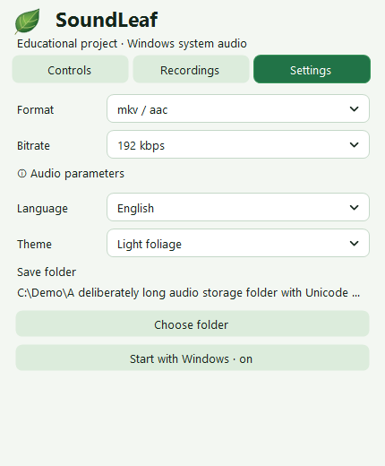
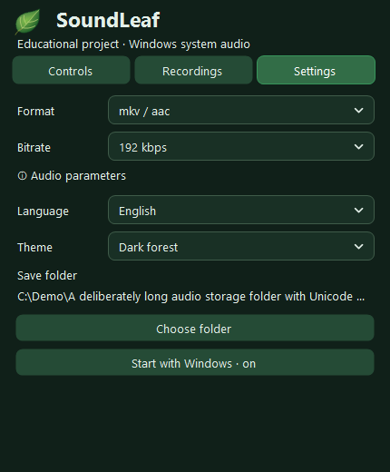
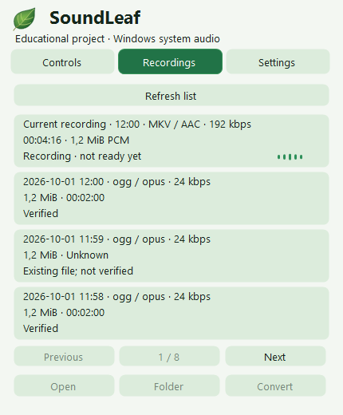
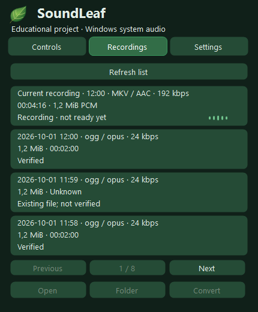

SoundLeaf
User guide
From first launch to a saved recording. Every step, alongside the actual SoundLeaf interface.
Start with the first step

1 · Install
Windows 11 x64 · .NET Framework 4.8. Download Offline Setup or the portable ZIP from the release page. Setup installs for the current user without administrator rights; FFmpeg 9.0.2, corresponding source and licenses are included. No Internet is needed during installation. Setup does not launch the application or enable startup. Extract the portable archive in full to a writable folder. Check SHA256SUMS.txt. The unsigned preview may trigger a Windows publisher warning; do not disable protection.
2 · Record
Launching SoundLeaf starts recording automatically after folder, free-space and selected-profile checks. Capture uses the default Windows output device, not the microphone. Only record permitted content with required consent. Left-click the tray to open the panel; right-click for the fallback menu. Pause excludes paused time. Escape or clicking outside hides only the panel.
Formats and settings
Default: mkv / aac at 192 kbit/s, original rate and channels. Choose one output format while stopped: ogg / opus (initially 24 kbit/s, mono, 48 kHz, speech VBR), mp3 (CBR), m4a / aac or aac / adts. VBR is a target, not a guaranteed size. Additional AAC/MP3 uses 48 kHz and up to two channels. Choose save folder, theme and Deutsch / Русский / English in Settings. Existing files are not moved.


3 · Save and verify
Stop and wait for encoding, full decoding and duration verification. A rotating tray ring means work is in progress, not completion. A result is ready only after verification and atomic publication without overwriting. Backup WAV is removed only after success; failures preserve audio. Recordings lists completed files and the unfinished current session. Save in another format creates a checked copy, keeps the original and cannot improve lost quality.


Recovery and WAV-only
If the encoder is unavailable, no format switch occurs automatically. Explicitly select WAV-only from the tray menu. Long WAV recordings remain multiple parts up to 256 MiB, not one unlimited file. Completed WAV sessions are marked separately. Recovery rebuilds unfinished recordings from checked WAV parts using their saved profile, and archives originals only after success.
4 · Limits
Strictly a learning project, not a professional recording solution. Tested on one Windows computer; screen/DPI matrices include modeled tests, not a claim of testing every display or a clean machine. Below 256 MiB free recording is blocked; low/unknown space warns. This is not a capacity guarantee. The quiet threshold changes only the level display, never captured audio. After changing output device start a new session. Before updates stop, wait, exit and back up Recordings and State. Uninstall retains user files; upgrades and automatic migration are not implemented.
5 · Help
Open the log from the tray on errors. Review audio, logs and personal paths before sharing them.
Report an issue